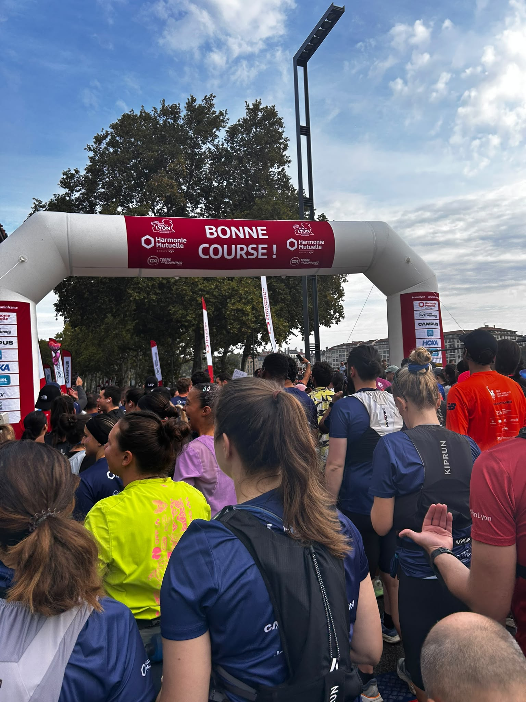
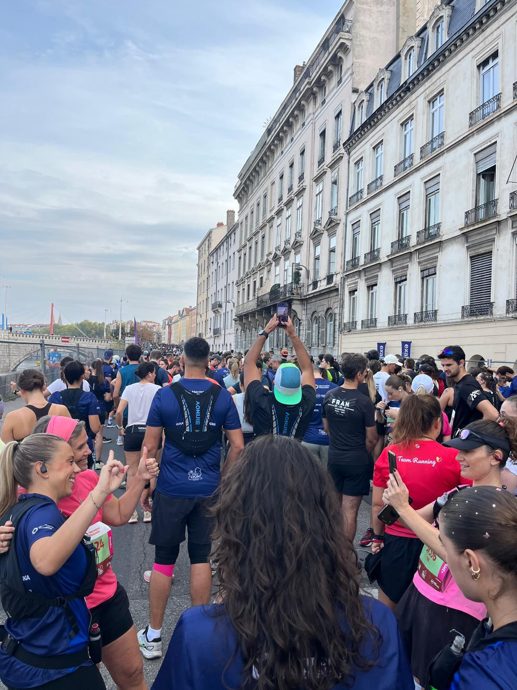
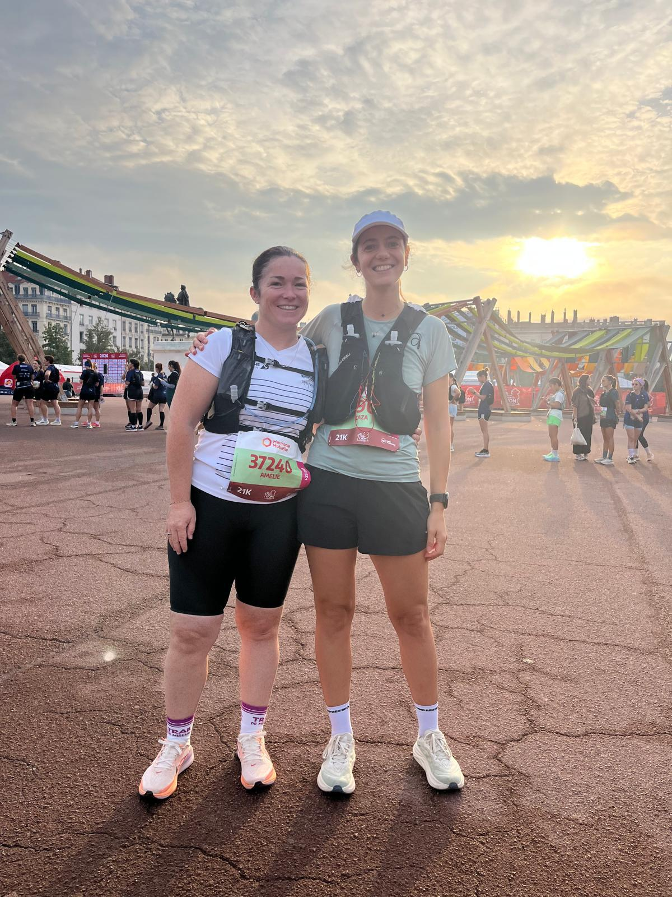
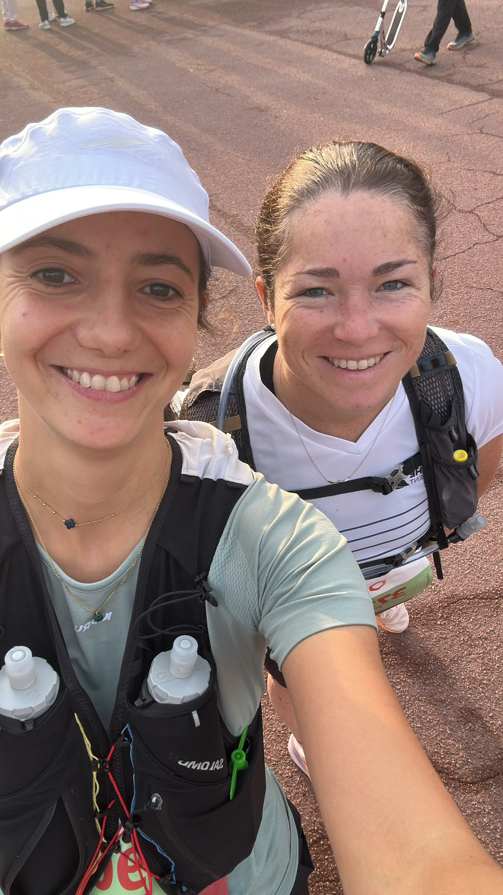
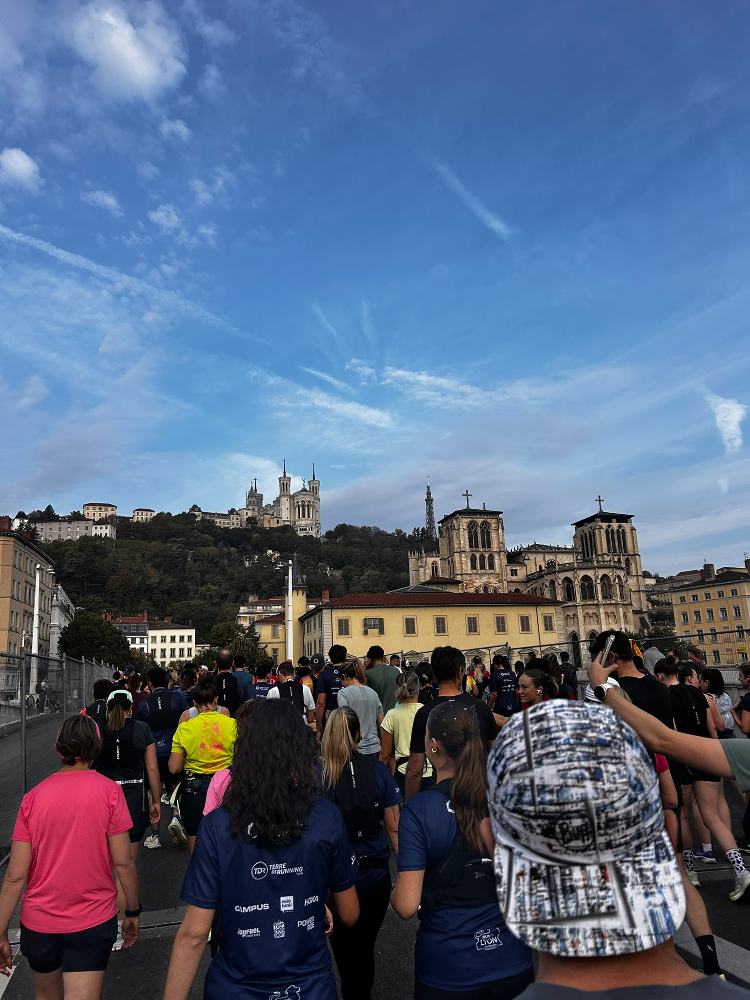
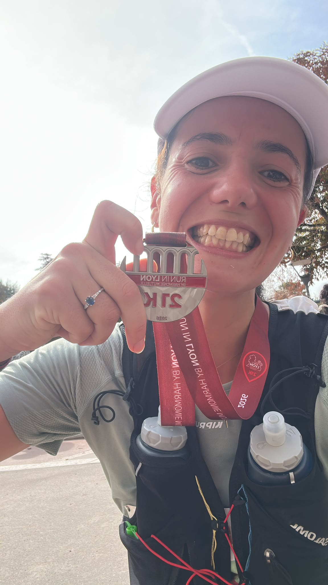

Jusqu'ici, dans les communiqués Mrun, quand on écrivait « Mathilde », on lisait « Baudelocq » — de la Drôme au Vercors, en passant par le Ventoux et le Mont-Blanc. Ce dimanche 4 octobre, à Lyon, une Mathilde peut en cacher une autre : Mathilde ZAMMIT prend le départ du semi-marathon de Run In Lyon. Son tout premier. Une préparation contrariée, un objectif simple — finir — et, au bout des 21 kilomètres, une arrivée en 2 h 23'45", submergée par l'émotion.
- Lieu
- Lyon
- Distance
- 21,1 kmSemi-marathon
- Date
- 4 octobreDimanche
- Objectif
- FinirPremier semi
🏃♀️ Le récit — Un premier semi
Semi-marathon 21K — Dimanche 4 octobre 2026, Lyon
Une préparation sous surveillance
Rien n'était écrit d'avance. Pendant la préparation, un syndrome de l'essuie-glace s'invite — cette inflammation de la bandelette ilio-tibiale, sur le côté du genou, que tant de coureurs redoutent. Mathilde est suivie de près par son kiné tout au long de la préparation, avec dans un coin de la tête une crainte qui ne la lâche pas : ne pas pouvoir faire la course.
Alors le matin du 4 octobre, passer sous l'arche « Bonne course ! », dossard 21K accroché, c'est déjà une première victoire.
Qui veut aller loin ménage sa monture
Le plan est limpide : l'objectif premier, c'est de finir. Mathilde part donc tranquille, très tranquille, au milieu de la marée de coureurs qui s'élance dans les rues de Lyon. Pas question de brusquer un genou qu'on a tant soigné. Elle écoute son corps, et elle attend.
Au 8ᵉ kilomètre, le corps donne sa réponse. Elle est en forme, les sensations sont là : tout est OK. Alors elle accélère. Après des semaines de doute, ces trois mots valent tous les chronos.


Le coup dur du 17ᵉ, la bascule du 18ᵉ
Un semi ne se laisse jamais apprivoiser sans résistance. Au 17ᵉ kilomètre, le petit coup dur arrive — ce moment que tout coureur connaît, où les derniers kilomètres paraissent soudain plus longs que tous les autres.
Et puis, au 18ᵉ, tout bascule. L'arrivée est à portée de main, et Mathilde décide de tout donner. Trois derniers kilomètres avec tout ce qu'il reste dans les jambes, portée par les encouragements — et par tout ce que cette préparation avait failli lui enlever.
La ligne, et l'émotion
Puis la ligne. Et avec elle, l'émotion — beaucoup d'émotion. Celle des semaines chez le kiné, de la peur de rester sur le bord, de ce départ prudent et de ces derniers kilomètres tout donnés. Mathilde ZAMMIT boucle son premier semi-marathon en 2 h 23'45". La fierté, elle, se lit dans son sourire, médaille 21K à la main.
🤝 À deux sur la ligne de départ
Ce premier semi, Mathilde l'a couru avec son amie Amélie. Et le fil qui relie cette matinée lyonnaise à Mrun passe aussi par là : Amélie est l'épouse de Jérémy, membre de l'association, habitué des sentiers de trail et des longues distances de l'ultra-trail. Ce dimanche, pas de frontale ni de bâtons : du bitume, des quais et des bandas. Mais le même esprit — se fixer un défi, et aller au bout.


🎉 Lyon en fête
Run In Lyon a tenu toutes ses promesses. Une journée superbement organisée, un temps idéal pour courir, et une ambiance de feu : des bandas et des DJ tout au long du parcours, des encouragements de partout. Le genre de décor qui vous pousse quand les jambes commencent à protester — et qui transforme une course en souvenir.
Chez Mrun, on le répète : du plaisir à la performance, du coureur amateur jusqu'au performer. Un premier semi bouclé au bout d'une préparation contrariée, c'est exactement ça. Une Mathilde peut en cacher une autre — et celle-ci vient d'écrire sa première ligne.


Résultats — Mathilde Zammit
- CourseRun In Lyon — Semi-marathon 21K
- DateDimanche 4 octobre 2026
- Distance21,1 km
- Temps2 h 23'45"
- Vitesse moyenne8,81 km/h
- Allure moyenne6'49" / km
- ParticularitéPremier semi-marathon
- Dossard36904
- StatutFinisher ✓
Le mot de Mathilde
Ma prépa a été bien suivie par le kiné, à cause d'un syndrome de l'essuie-glace. J'avais peur de ne pas pouvoir faire la course.
J'ai commencé très tranquille, parce que l'objectif premier était de finir. J'ai accéléré au 8ᵉ kilomètre, j'étais en forme : tout était OK ! Petit coup dur au 17ᵉ… et puis à partir du 18ᵉ, tout donner, l'arrivée à portée de main.
Je suis arrivée avec beaucoup d'émotion. Fierté d'avoir réussi mon premier semi !
Une journée super bien organisée, un temps idéal, une ambiance de feu avec des bandas et des DJ tout au long du parcours, et des encouragements de partout.
Retour aux communiqués